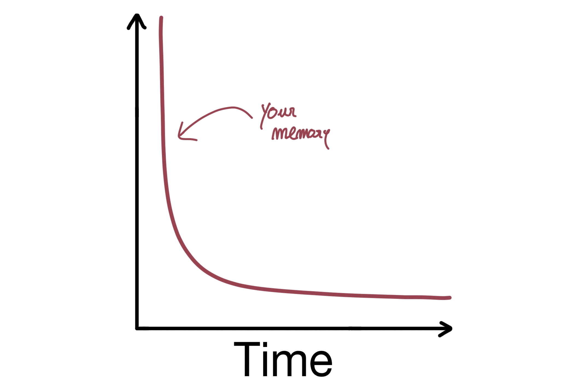
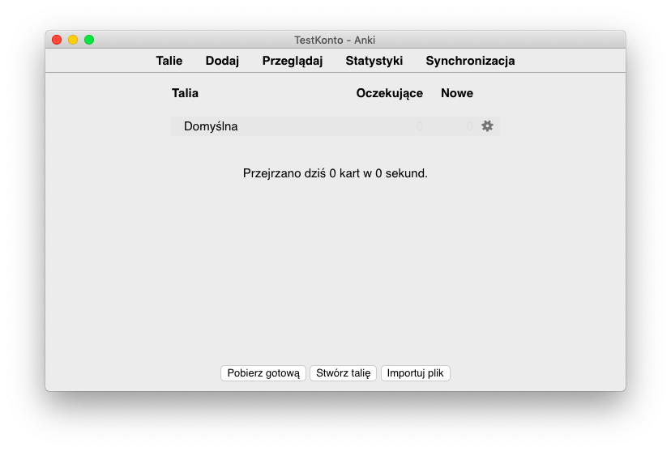
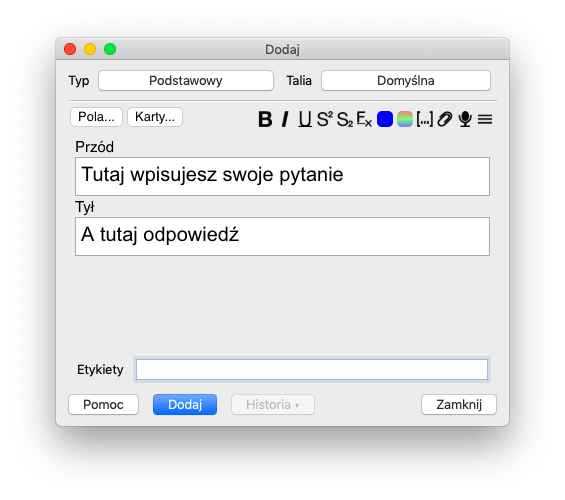
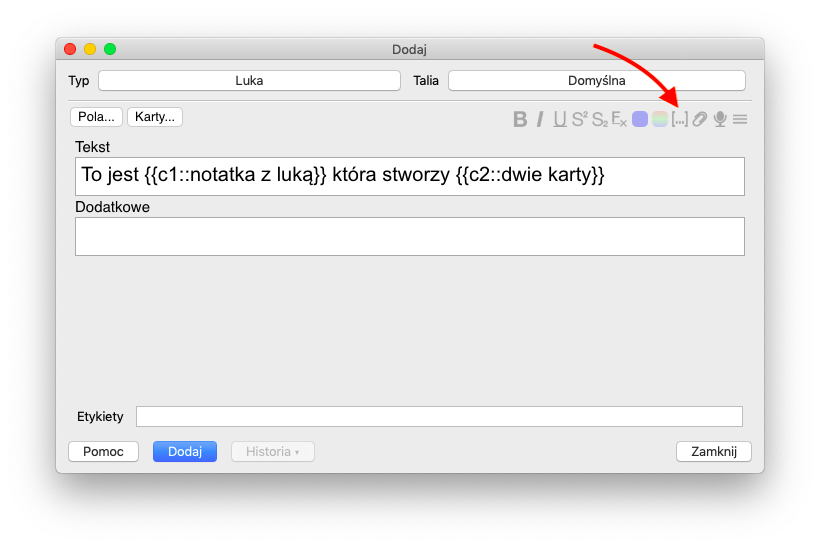
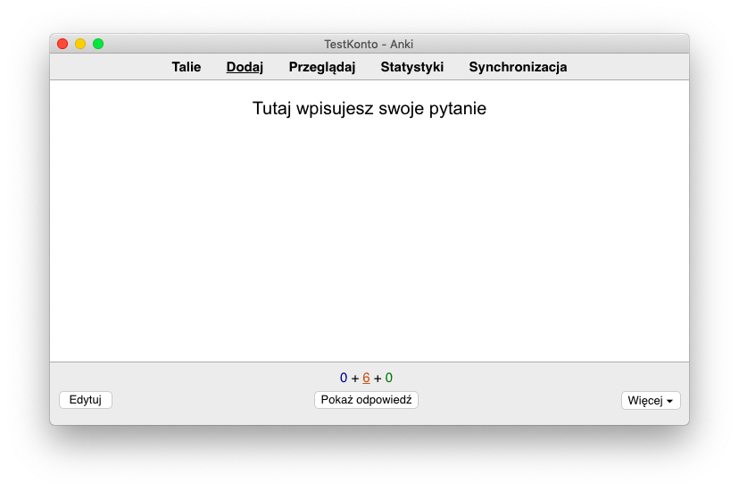
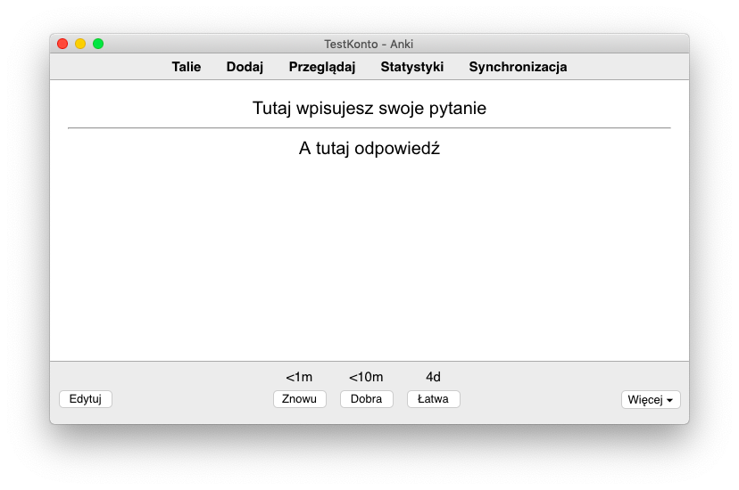
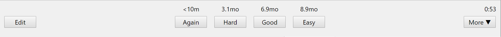

Łagodne wprowadzenie na temat tego, jak używać Anki do poprawy pamięci

Gdzie znalazłbyś się w życiu, gdybyś nie zapomniał?
Na początku lepiej by ci poszło w szkole. Zamiast kręcić się w swoim łóżku, nie mogąc zasnąć przerażony egzaminem nadchodzącym następnego dnia, spałbyś spokojnie ze świadomością, że wiesz wszystko, co musisz wiedzieć, aby zdać egzamin.
Spędziłbyś mniej godzin na nauce. Ile razy otwierałeś podręcznik tylko po to, by dowiedzieć się, że zapomniałeś wszystkiego, co uczyłeś się poprzedniego dnia? Gdybyś nie zapomniał, to te godziny spędzone na nauce zawsze coś by znaczyły, zamiast pozostawiać uczucie, że płyniesz pod prąd. Szkoła mogłaby być nawet przyjemna, gdybyś nie zapomniał.
Jak wyglądałaby twoja kariera, gdybyś nie zapomniał?
Zapominanie dotyczy nas wszystkich. Nie ma nikogo, kto wcześniej nie zmagałby się z tym problemem. Nasze życie byłoby lepsze, gdybyśmy nie zapomnieli.
Niestety, zapomnienie jest nieuniknione. Nie ma czegoś takiego jak doskonała pamięć. Nie jestem tu po to, by sprzedać ci magiczne pigułki, które zmienią cię w Bradleya Coopera jak w filmie "Jestem Bogiem".
Nie oznacza to jednak, że nie ma rzeczy, które można zrobić, aby znacząco zmniejszyć prędkość, z jaką się zapomina, bo są.
Nauka wie, co trzeba zrobić, aby wspomnienia pozostały w pamięci przez długi czas. Wie o tym już od jakiegoś czasu, naprawdę. Po prostu do tej pory wykonała kawał strasznej roboty, upewniając się, że wiemy wystarczająco dużo, abyśmy mogli z tego skorzystać.
Moim zamiarem napisania tego jest naprawienie tych krzywd i wprowadzenie cię w rozłożenia powtórzeń w czasie, bardziej sprawdzoną metodę, która raz na zawsze da ci kontrolę nad swoją pamięcią, a Anki, oprogramowanie, pomoże ci to zrobić.
Więc, zacznijmy od początku: Co to jest rozłożenia powtórzeń w czasie?
Stulecia nauki, o której ci nie mówią
Ponad sto lat temu niemiecki psycholog Hermann Ebbinghaus nie tylko rozpoczął naukowe badania nad pamięcią, ale również dokonał jej najbardziej udanego odkrycia.
Przecież jakie odkrycie może być bardziej znaczące niż to, co sprawia, że wspomnienia się utrwalają?
Ebbinghaus tworzył różne listy nonsensownych sylab, które musiał zapamiętać, a gdy tylko mógł wypowiedzieć całą listę, nie popełniając ani jednego błędu, zaznaczał w swoim kalendarzu dzień, w którym musiał ją jeszcze raz powtórzyć.
Niektóre zestawienia musiał zapamiętać dzień po dniu, inne tydzień, a jeszcze inne cały miesiąc po tym, jak pierwszy raz je zapamiętał. Nie brzmi to zbyt zabawnie, prawda? Jest to szczególnie widoczne, gdy weźmie się pod uwagę każdą listę, która musiała zająć mu sporo czasu, ponieważ z założenia każda z trzyliterowych sylab, które musiał nauczyć się, została wybrana tak, że nie była łatwa do zapamiętana. Na przykład, sylaba BOL nie wchodziła w grę, ponieważ Ebbinghaus mógł zamiast tego użyć BALL do jej przypomnienia.
Po upływie wymaganego czasu, aby zmierzyć, w jakim stopniu zapomniał o liście, którą tyle czasu poświęcił na zapamiętywanie, zapamiętał tę samą listę jeszcze raz. Nie tylko musiał siedzieć nieruchomo w swoim biurze przez długi czas próbując zapamiętać kilka bzdurnych słów raz, ale musiał zrobić to dwa razy! Podczas drugiej próby miał pewną pomoc, ponieważ zapamiętanie listy po raz drugi zajęłoby mu mniej czasu, jak za pierwszym razem.
Gdyby do tego momentu już o niej zapomniał, wtedy zapamiętanie listy za drugim razem zajęłoby mu co najmniej tyle samo czasu, co za pierwszym. Gdyby jednak pamięć o niej nadal spoczywała w jego umyśle, byłby w stanie przejść przez tę listę szybciej niż wcześniej. Zmieniając ilość czasu pomiędzy kolejnymi próbami i widząc, jak to wpłynęło na to, ile czasu zajęło mu potem zapamiętanie listy za drugim razem, Ebbinghaus był w stanie zmierzyć wpływ czasu na jego pamięć.
I jaki to miało efekt.
Pierwszą rzeczą, jaką zauważył, było to, że wspomnienia są najbardziej kruche, gdy są jeszcze młode. Z danych, które zebrał, mógł zauważyć, że większość zapomnień następuje w kilku chwilach po stworzeniu pamięci. Ebbinghaus odkrył, że zapomnienie nie dzieje się w liniowym tempie w czasie, lecz każdego dnia, który upływa, wybijając stałą ilość witalności pamięci, aż do jej całkowitego zapomnienia, na początku dzieje się dość szybko, a potem zwalnia.
W pierwszych godzinach życia nowo stworzonej pamięci, to tak jakby wyskoczyła z lecącego samolotu i swobodnie spadała, szybko tracąc wysokość. Gdy ziemia staje się coraz bliżej, nasza pamięć aktywuje spadochron i zaczyna szybować, oczywiście nadal spadając, ale znacznie wolniej niż wtedy, gdy po raz pierwszy wyskoczył z samolotu. Teraz, aby być pewnym, krzywa zapomnienia, jak to odkrycie zostało nazwane, jest ważnym punktem orientacyjnym w naukowym badaniu pamięci, ale nie jest to szczególnie użyteczne. My wszyscy z czasem zapominamy. Co za odkrycie! Nie trzeba być naukowcem najwyższego szczebla, aby dojść do tego wniosku. To dlatego tu jesteśmy!

Oto moje wspaniałe umiejętności rysowania!
Ale Ebbinghaus na tym nie poprzestał. Kiedy po raz pierwszy zaczął uczyć się swoich bzdurnych sylab, Ebbinghaus, jak wielu studentów, chciał nauczyć się wszystkiego w jednej sesji. Ale potem, być może dlatego, że miał już dość tych bzdur, wpadł na pomysł, by rozłożyć naukę w czasie. Zamiast spędzić większość dnia na nauce jednej ze swoich list, rozłożył naukę na kilka dni. To, co zauważył, gdy to zrobił, jest najważniejszym odkryciem dotyczącym pamięci, o którym nikt nigdy ci nie powiedział.
Myślałbyś, że niewiele by się zmieniło, gdybyś zamiast uczyć się kilka materiałów w ciągu jednego dnia zrobił to w ciągu trzech lub więcej dni. Ale Ebbinghaus odkrył, że nie tylko jego pamięć się wzmocniła, ale też mniej czasu zajęło mu zapamiętanie jego list. Oznaczało to, że po prostu zmieniając dni na naukę, Ebbinghaus mógł mieć to, co najlepsze: lepszą pamięć przy mniejszej ilości czasu poświęconego na naukę.
Nie trzeba podkreślać, jak ważne jest to odkrycie. Gdyby ktoś podszedł do ciebie i powiedział ci o rewolucyjnej metodzie uczenia się, która nie tylko skróci czas, który spędzasz na nauce, ale także sprawi, że zachowasz na dłużej to, czego się uczysz, pomyślałbyś, że sprzedają Ci jakieś przekręty.
Jednak rozłożenie powtórzeń, jak nazywa się odkrycie Ebbinghausu, jest daleki od bycia przekrętem. Jest to jedno z najbardziej popartych naukowo odkryć w całej dziedzinie psychologii.
Sens rozłożenia powtórzeń w czasie jest dość prosty. Biorąc pod uwagę wybór pomiędzy masową nauką, a rozłożeniem jej na przestrzeni czasu. Nie ma żadnego haczyka. To naprawdę jest takie proste.
Oznacza to, że jeśli jesteś uczniem i za miesiąc masz egzamin, powinieneś zacząć uczyć się teraz, a nie czekać do końca tygodnia. Jeśli, na przykład, zamierzasz spędzić 50 godzin na nauce, to rozłożenie tych godzin na cały miesiąc, upewniając się, że zostaniesz ponownie wystawiony na działanie materiału w wystarczająco dużych odstępach czasu, da ci znacznie lepsze wyniki niż gdybyś spakował te 50 godzin w jednym, wypełnionym stresem i zasilanym kawą tygodniu.
Oczywiście, łatwiej to powiedzieć niż zrobić.
Efekt rozłożenia powtórzeń w czasie jest jedną z najważniejszych broni, jaką uczeń może mieć w swoim arsenale, ale wiedza o jego niesamowitych efektach nie oznacza, że koniecznie będziemy go stosować. Przecież wszyscy wiemy, żeby nie jeść zbyt wiele przetworzonych pokarmów, czyż nie? Ale to chyba nie przeszkadza wielu z nas.
Ciągnięcie całonocnej sesji nauki na egzamin jest jak jedzenie ciasta wypełnione cukrem, gdy próbujesz schudnąć, ale fakt, że nadal jest to podstawowa strategia uczenia się wielu uczniów jest świadectwem tego, jak trudne może być przyjęcie nauki z efektem rozłożenia powtórzeń w czasie.
Gdyby tylko istniała aplikacja do tego...
Ta aplikacja zmieni Twoją pamięć w super moc
Sto lat temu Ebbinghaus nie miał komputera, a co dopiero smartfona. Gdyby miał, zadbałby o rozłożenia powtórzeń nauki na komputerze. Zamiast tego musiał zrobić to wszystko sam, choć jeśli weźmiemy pod uwagę, że był typem faceta, który nie żałował, że spędził setki godzin na uczeniu się niekończących się list bzdur, to może nie byłby przez to tak zafascynowany.
Na szczęście dziś mamy narzędzia, które zarządzają tym wszystkim za nas.
A wszystko zaczyna się od prostej fiszki.
Każdy wie, jak działa fiszka. Piszesz coś z przodu, potem coś z tyłu, a potem masz sobie przypomnieć, co napisałeś na odwrocie po przeczytaniu tego, co jest na górze.
Przypuśćmy, że w trakcie nauki do przyszłego egzaminu, napisałeś wiele fiszek. Masz ich mnóstwo siedząc przy swoim biurku i w nich są wszystkie rzeczy, które musisz znać jeśli chcesz zdać ten egzamin.
Ponieważ wiesz o efekcie rozłożenia powtórzeń w czasie, wiesz, że wbijanie tych karteczek jest złą strategią, ale jak masz zamiar je rozłożyć w czasie? Jest tyle kart do śledzenia...
Co by było, gdyby fiszki istniały na twoim komputerze?
Gdyby to było możliwe, wtedy komputer mógłby zająć się śledzeniem, kiedy masz przeglądać swoje fiszki a Ty mógłbyś skupić się wyłącznie na rzeczach, które mają znaczenie, co w tym przypadku jest prawidłowe odpowiadanie na fiszki i zdany egzamin.
Dlatego właśnie wynaleziono oprogramowanie do powtarzania w odstępie czasowym: aby zająć się całą pracą z chrząknięciami, dzięki czemu można łatwo dodać do swojego życia rozłożenia powtórzeń w czasie.
Istotnym oprogramowania do rozłożenia powtórzeń w czasie jest śledzenie, kiedy należy przedstawić materiał, który się w nim znajduje. Nazywa się to oprogramowaniem do powtarzania odstępów, ponieważ wykorzystuje ono specjalne algorytmy do obliczania optymalnego odstępu pomiędzy ostatnim przeglądem materiału a ponownym przeglądem, aby uzyskać wszystkie korzyści wynikające z efektu rozłożenia powtórzeń w czasie.
Na początku może się to wydawać mało prawdopodobne, ale oprogramowanie do rozłożenia powtórzeń w czasie jest rewolucyjnym rodzajem oprogramowania i rozpoczęcie jego używania jest jedną z najbardziej wpływowych decyzji, jakie można podjąć. Dlaczego?
Ponieważ oprogramowanie do rozłożenia powtórzeń w czasie sprawia, że pamięć dostaje wybór.
Pomyślcie o tym w ten sposób: zapomnienie jest nieuchronne. Krzywa zapomnienia jest wredną kochanką i pociągnie za sobą wszystkie twoje wspomnienia. Jednak efekt rozłożenia powtórzeń w czasie mówi nam, że istnieją sposoby, aby osłabić siłę przyciągania krzywej zapominania i sprawić, że wspomnienia pozostaną świeże w Twojej głowie na dłużej. To, co robi oprogramowanie do powtarzania w odstępie, to automatyzacja zadania śledzenia, które wspomnienia osłabły z czasem, aby móc je zaprezentować i w ten sposób, dzięki magicznym efektom odstępu, przywrócić je do życia silniejsze niż kiedykolwiek.
Jeśli oprogramowanie uzna, że jedno z twoich wspomnień jest nadal silnie zakorzenione w twoim umyśle, to nie pokaże ci tego materiału. Jeśli zamiast tego uzna, że zapominasz o tym materiale, pokaże go tobie, abyś mógł go ponownie przejrzeć.
Tak długo, jak długo używasz tego oprogramowania, wtedy wszystko, co w nim umieścisz ma potencjał, by stać się czymś, co zapamiętasz na zawsze.
Niezły towar, nieprawdaż?
Więc, jakiego programu do rozłożenia powtórzeń w czasie należy użyć?
Łagodne wprowadzenie do Anki
Jeśli tytuł nie podpowiedział Ci, użyj Anki.
Istnieje wiele innych rodzajów oprogramowania do powtarzania w odstępach, ale powinieneś używać Anki. Nie bez powodu jest to najbardziej popularny program do powtarzania w odstępie na rynku. Posiada on większość funkcji, których będziesz potrzebował, a te, których nie ma, są dostępne jako dodatek od społeczności Anki.
Najlepsze jest to, że jest za darmo, a ja pokażę ci, jak możesz wykorzystać Anki do poprawy pamięci.
Aby zacząć używać Anki, trzeba będzie ją zainstalować. Oczywiście już to wiesz, ale nigdy nie zaszkodzi zacząć od samych podstaw.
Po zainstalowaniu, pojawi się następujący ekran:

To jest główne okno Anki, pokazuje talie, które masz w swojej kolekcji. Możesz mieć tyle talii, ile chcesz - choć Anki zmaga się, gdy masz ich dużo - ale dla większości ludzi wystarczy jedna talia.
W górnym menu powyżej znajduje się przycisk Dodaj. Kliknij na niego. Czas stworzyć naszą pierwszą kartę.
Po kliknięciu na przycisk Dodaj, pojawi się to okno:

Tutaj Anki może Cię trochę zagubić, ale pokaże to dla ciebie.
Wiedz, że choć Anki jest potężnym oprogramowaniem, to jednak można się z nim obchodzić nie znając większości jego cech i zawiłości. Otrzymujesz większość jego zalet wyłącznie poprzez używanie go, więc lepiej jest używać go nawet wtedy, gdy nie rozumiesz, niż nigdy nie używać go w ogóle. Używanie Anki jest już połowa wygranej bitwy.
Pierwszą rzeczą, którą należy zrozumieć o tym, jak działa Anki, jest to, Karta - jak fiszki, które już znasz - jest tworzona z Notatki. Kiedy klikniesz przycisk "Dodaj", dodaje się Notatka, z której jedna lub więcej kart zostanie stworzona przez Anki.
Na rysunku powyżej, utworzona przeze mnie notatka ma dwa Pola: Przód i Tył.
Przód jest tam, gdzie piszesz swoje pytanie, a tył jest tam, dodajesz odpowiedź na to pytanie. To działa, jak zwykłe fiszki. Pytania z przodu, a odpowiedzi z tyłu.
Używając przykładu z mojej talii, oto karta, którą dodałem nie tak dawno temu:
Przód: Co oznacza po łacinie Amygdala?
Tył: Migdał
Kiedy Anki uzna, że nadszedł czas, abym przejrzał tę kartę, pokaże mi ona "Co oznacza po łacinie Amygdala?" i będę musiał odpowiedzieć, "Migdał". Jeśli zastanawiasz się, dlaczego dodałem to do mojej kolekcji, to dlatego, że czytałem o mózgu i myślałem, że to interesujące, że migdał nazywa się tak, bo ma kształt migdałka. Chciałam zapamiętać ten ciekawy fakt, więc dodałam go do mojej kolekcji Anki. Teraz nigdy tego nie zapomnę. Taka jest moc Anki. To daje ci kontrolę nad pamięcią.
Po wprowadzeniu pytania i odpowiedzi do Anki i kliknięciu na przycisk "Dodaj", Anki przeczyta pola "przód" i "tył" i użyje ich do stworzenia karty z przodem jako pytaniem i tyłem z odpowiedzią. Jednakże, Anki będzie tworzyć karty w ten sposób jak zostało to jej powiedziane.
Jeśli spojrzysz na obrazek powyżej, jest opcja na górze zatytułowana Typ. Typ notatki dyktuje, ile pól ma notatka i mówi Anki, jak ich używać do tworzenia kart. W naszym poprzednim przykładzie, typ Podstawowy dyktuje, że notatka ma dwa pola, przednie i tylne, ale możesz utworzyć własny typ notatki, aby dopasować go do swoich potrzeb.
Domyślnie Anki ma zainstalowane dwa rodzaje notatek: Podstawowy, który już poznaliśmy i Luka.
Typ notatki Luka został stworzony z myślą o usuwaniu luk w pamięci.
Usuwanie luk, co prawda dość dziwna nazwa, jest wtedy, gdy pominięto część tekstu, a trzeba zapamiętać, co wypełnia puste miejsce. Jeśli zamiast, "To jest usuwanie luk" napisałem: "To jest ________ ___", to twoim zadaniem byłoby wypełnienie pustego pola "usuwanie luk".
Aby utworzyć kartkę przy użyciu typu Luka, kliknij tam, gdzie jest napisane Podstawowy; otworzy się okno pokazujące wszystkie dostępne typy do wyboru. Wybierz Luka. Teraz jesteś gotowy do stworzenia swojej pierwszej karty z luką.

Podczas gdy dodawania pytania i odpowiedzi, dla typu Luka musisz tylko powiedzieć Anki, na których fragmentach tekstu chcesz, aby cię odpytała. Aby to zrobić, wystarczy zaznaczyć tę część tekstu, przejść do paska narzędzi powyżej i wybrać czwartą ikonę z prawej strony, tę, która wygląda tak [...].
Na obrazku powyżej zaznaczyłem dwa fragmenty tekstu, "notatka z luką" i "dwie karty". Anki, wiedząc, że ta notatka jest typu Luka, utworzy dwie karty z tej jednej notatki. Pierwsza kartka wygląda tak:
To jest [...] która stworzy dwie karty
Podczas gdy druga wygląda tak:
To jest notatka z luką która stworzy [...]
Aby prawidłowo odpowiedzieć na te karty, wystarczy wypełnić puste miejsce.
To jest [...] która stworzy dwie karty ⟶ To jest notatka z luką która stworzy dwie karty
and
To jest notatka z luką która stworzy [...] ⟶ To jest notatka z luką która stworzy dwie karty
Jak widać, bardzo przydatny jest typ Luki. Niedawno użyłem go do stworzenia czterech kart, które testują mnie na mojej wiedzy o anatomii mózgu. Chciałem poznać nazwy czterech płatów mózgu i w tym celu stworzyłem następującą notatkę:
Cztery płaty mózgu to:
• Płat {{c1::czołowy}}
• Płat {{c2::ciemieniowy}}
• Płat {{c3::potyliczny}}
• Płat {{c4::skroniowy}}
Z tej jednej notatki Anki stworzyła cztery karty, po jednej dla każdego płata. Kiedy przyjdzie czas aby przyjrzeć się jednej z tych kart, Anki mi ją pokaże:
Cztery płaty mózgu to:
• Płat {{c1::czołowy}}
• Płat {{c2::ciemieniowy}}
• Płat {{c3::potyliczny}}
• Płat [...]
A ja będę musiał odpowiedzieć: Płat skroniowy.
Jest mało prawdopodobne, że kiedykolwiek będziesz musiał tworzyć własne typy notatek. Podstawowy i Luka zaspokoją większość twoich potrzeb, próby wyciskania całej wydajności z Anki poprzez tworzenie własnych hiper-typów sprawi, że przestaniesz używać Anki, ponieważ jest to zbyt dużo pracy.
Utrzymuj wszystko w prostocie, a nie upadniesz. Pamiętaj, że samo użycie Anki to już połowa wygranej bitwy.
Teraz, gdy dodałeś swoje pierwsze karty, nadszedł czas, aby je przejrzeć. Aby to zrobić, kliknij na swoją talię na liście talii, a następnie kliknij na przycisk Ucz się teraz.
Ponieważ stworzyłem karty, które pokazywałem ci powyżej, to jest to co mi pokazuje:

Teraz muszę spróbować i przypomnieć sobie, jaka jest na to odpowiedź. Ponieważ był to tylko przykład, nie ma dla mnie żadnej odpowiedzi do zapamiętania, ale gdyby pytanie brzmiało: "Jaki programu do powtarzania w odstępach?", moim zadaniem byłoby przypomnienie sobie "Anki".
Jeśli masz na myśli odpowiedź lub nie jesteś w stanie jej przypomnieć, kliknij przycisk Pokaż odpowiedź.
Jak pewnie się zorientowałeś, Anki pokaże ci odpowiedź:

Teraz nadszedł czas, abyś ocenił swoją pamięć.
Na obrazku powyżej znajdują się trzy opcje: Znowu, Dobra, i Łatwa. Są one uporządkowane według stopnia trudności w zapamiętywaniu odpowiedzi.
Jeśli nie pamiętasz odpowiedzi, wówczas należy wybrać przycisk Znowu. Daje to znak Anki, że musisz spędzić więcej czasu z materiałem, Anki przedstawi Ci ponownie dany materiał wcześniej niż później.
Z drugiej strony, jeśli odpowiedź przyszła do ciebie natychmiast, to znaczy, że pamięć o niej jest silna. Wybierając przycisk Łatwa Anki będzie wiedziała, że prawdopodobnie nie będziesz musiał przez jakiś czas przeglądać tego materiału.
Oto jeden z przykładów opcji, które pojawiają się w jednej z kart na mojej osobistej talii, którą muszę jeszcze dziś przejrzeć.

Jak widzisz, mam cztery opcje do wyboru, a nie trzy jak powyżej, ponieważ zetknąłem się z tą kartą już wiele razy, podczas gdy poprzednia karta była nowo utworzona.
Można również zauważyć, że jeśli wybiorę opcję "Łatwa", co zrobiłem, ponieważ odpowiedź na tę konkretną kartę przyszła do mnie natychmiast, Anki pokaże mi ją ponownie dopiero za około dziewięć miesięcy.
To jest siła efektu rozłożenia powtórzeń w czasie, połączona z magią Anki, w akcji.
Jakie są szanse, że za 9 miesięcy będę pamiętał, że muszę przejrzeć to pytanie i zobaczyć, jak dobrze pamiętam jego odpowiedź?
Żadne. Nie ma mowy, żebym o tym pamiętał.
Ale z Anki, nie muszę. Załatwia to wszystko za mnie.
Od wyliczenia optymalnego odstępu czasu do pokazania materialu, Anki troszczy się o całą ciężką pracę związaną z przyjęciem do naszego życia rozłożenia powtórzeń w czasie. Tak długo, jak będziemy się pokazywać, żeby robić codzienne powtórzenia, Anki dopilnuje, żebyśmy mieli pełną kontrolę nad naszą pamięcią.
Oznacza to, że naszym priorytetem numer jeden powinno być upewnienie się, że codziennie zaglądamy do Anki.
To nie jest małe zadanie. Wiedziałem o Anki i powtarzałem to już blisko dekadę, ale byłoby naciągane powiedzieć, że używam jej od tak dawna. W ciągu tych lat było wiele okresów, w których całkowicie przestałem jej używać. Nie chodzi o to, że zapomniałem o Anki i wielu korzyściach płynących z rozłożenia powtórzeń w czasie - byłoby to ironią losu - ale raczej o to, że łatwo jest wpaść w pułapkę, w której robienie codziennych sesji staje się obowiązkiem, w którym wie się, że otwarcie programu przyniesie niewiele przyjemności, a całe mnóstwo bólu.
Może się to zdarzyć z różnych powodów.
Częstym trybem awaryjnym na starcie jest rozpoczęcie rzucania w niego rzeczy na własną rękę w nadziei, że Anki w jakiś sposób dostanie to wszystko do twojej grubej głowy. Na przykład, wiele osób zaczyna od dodania wszystkich stolic świata. To brzmi jak zabawna rzecz do zapamiętania, prawda?
Jednak w końcu przekonują się, że tak naprawdę nigdy im na tym nie zależało, ale teraz za każdym razem, gdy otwierają Anki, są proszeni o podanie nazwy tych stolic. Ponieważ tak bardzo im na tym nie zależy, nie odpowiadają poprawnie. Może mylą Mińsk z Lublaną, albo za życia nie mogą wymyślić nazwy stolicy Perú. A skoro ciągle mylą te pytania, Anki ciągle pokazuje im te same karty, nie dbają o to, co dla nich mało istotne. Wchodzą w zaklętą pętlę, pętlę, która szybko zabiera im całą zabawę w uczeniu się fajnych nowych rzeczy.
Jak już mówiłem wcześniej i nadal będę podkreślał, najważniejszą rzeczą jest dalsze używanie Anki. Twoim priorytetem jest przede wszystkim to, abyś się jej trzymał.
Droga do lepszej pamięci zaczyna się od spędzenia kilku minut dziennie z Anki, a w przyszłym artykule podzielę się z Tobą kilkoma radami, z których możesz skorzystać, aby upewnić się, że nie odpadniesz od robienia swoich codziennych sesji.